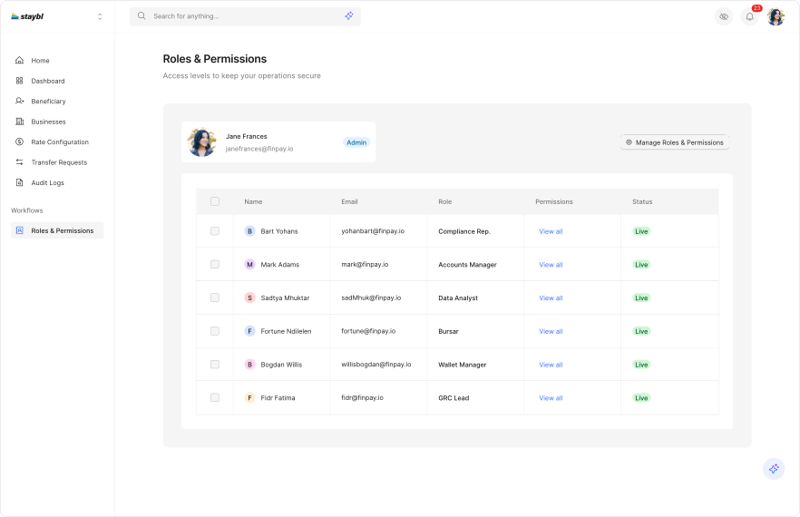
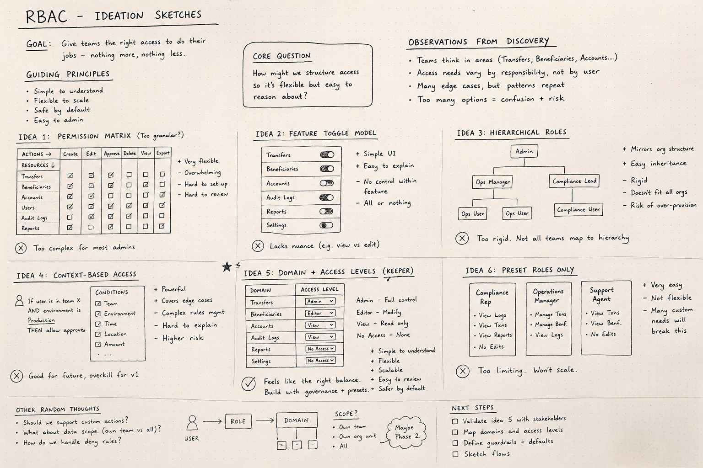
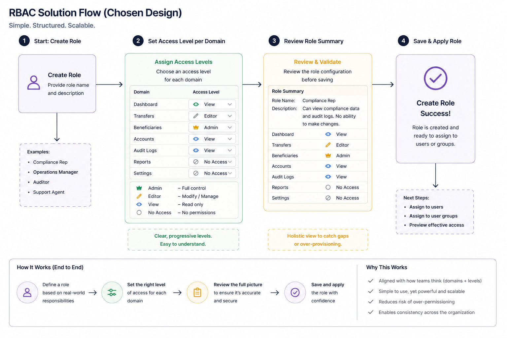
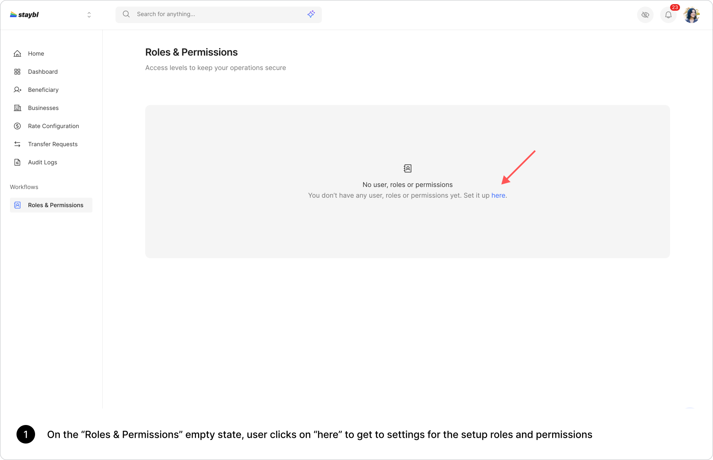
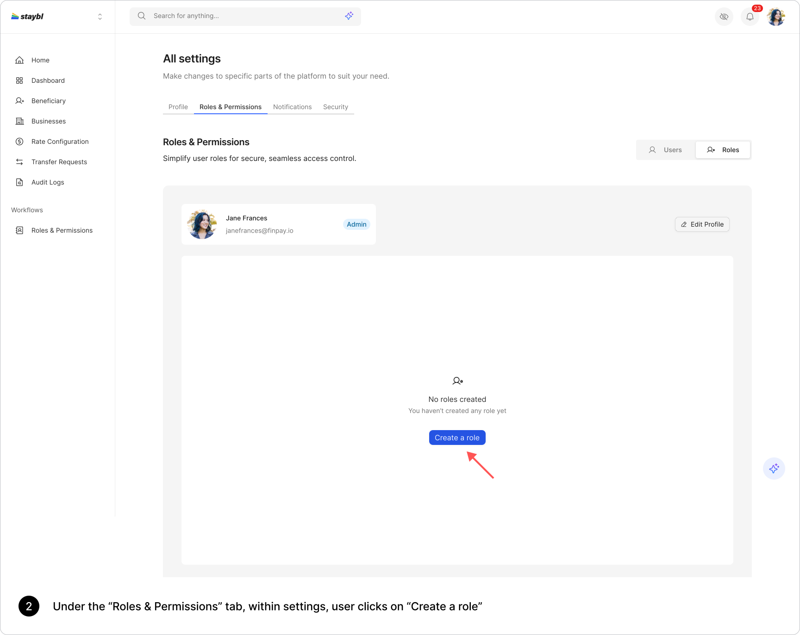
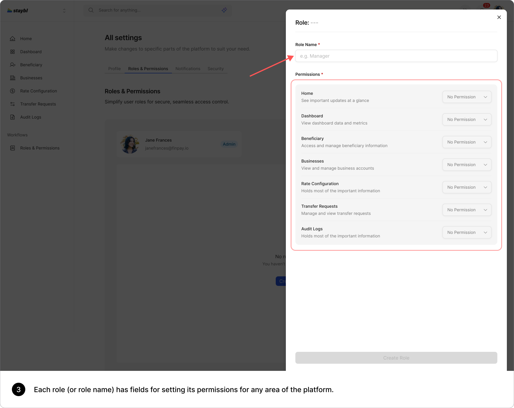
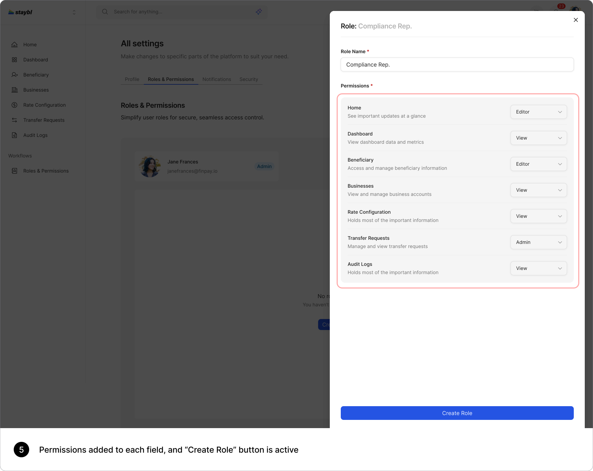
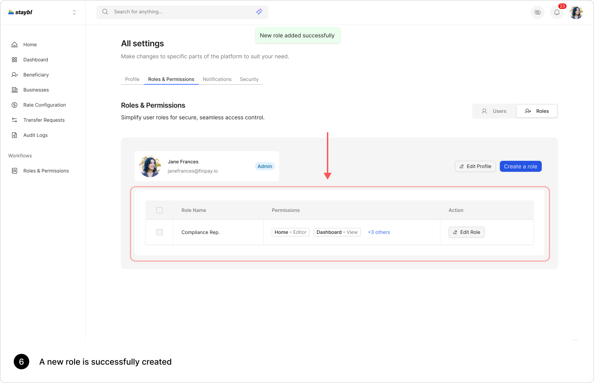
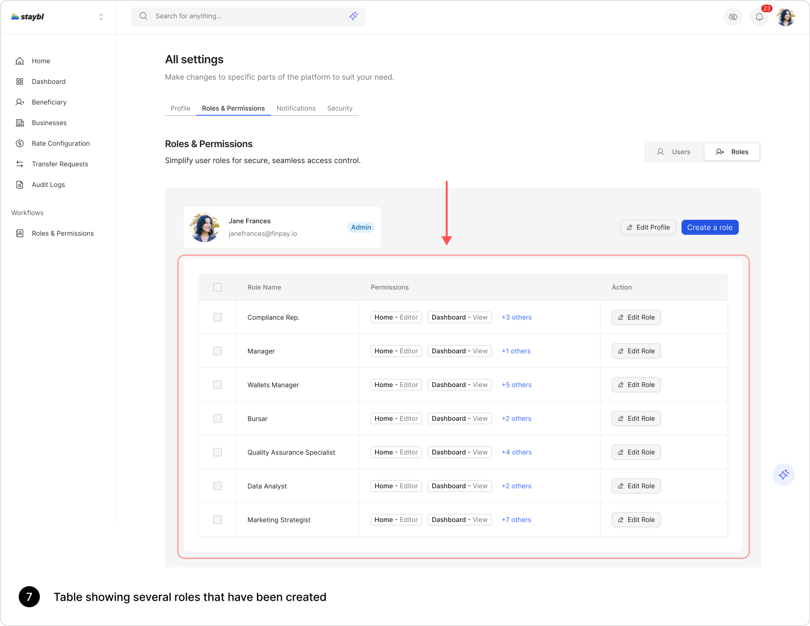

Secure Access Control
Enable secure and controlled access to sensitive operations

OUTLINE
Status
Shipped-GA
Project Brief
Designed simple, scalable RBAC system aligning access with real roles
Type
New Feature
My Role
Design Lead
Prod-Dev Process
Agile (2 weeks sprints | 3-4 sprint deployment)
Deliverables
Wireframes, User flow, Hi-Fi prototypes, and Interaction guides
When we began building access control into Staybl, there was no formal system in
place.
Permissions were handled
implicitly in code, with engineers defining access on a case-by-case basis. This approach worked
early on, but as the
platform expanded into financial operations, compliance workflows, and multi-role usage, it became
increasingly fragile.
I led the design of a Role-Based Access Control (RBAC) system from scratch, creating a scalable,
intuitive framework that
allows administrators to define who can access what, across the entire product.
The solution centered on a simple but powerful model: structuring access by product domains and
assigning clear,
progressive permission levels (Admin, Editor, View, No Access). This aligned system behavior with
how organizations
naturally think about roles and responsibilities.
Although this was a foundational feature, its impact was both immediate and measurable:
Designing RBAC from scratch is deceptively complex. The obvious approach, listing out permissions and assigning them to roles, often leads to systems that are technically complete but practically unusable.
The real challenge was deeper:
“How do we design an access control system that feels intuitive to humans, while remaining robust enough for complex, high-stakes environments?”
This meant solving for three things simultaneously:
As the product matured, it began supporting more sensitive operations like financial transactions, compliance oversight, and organizational workflows.
Without a structured access system:
This created operational inefficiencies and introduced security risks. To support enterprise use cases and regulatory expectations, the business needed a robust, flexible access control system.
Secure Access Control
Enable secure and controlled access to sensitive operations
Lower Engineering Dependency
Reduce engineering overhead for access management
Enterprise-Ready Access
Support enterprise customers with complex role structures
Scalable Access System
Ensure the system scales with new features and modules
The UX goals for the RBAC system are as follows:
The core challenge wasn’t just adding permissions; it was designing a system that balances:
To avoid building an overly abstract or overly technical system, I grounded the design in real-world usage.
I spoke with:
“I need visibility into transactions and audit logs without the ability to modify anything, so I can ensure regulatory compliance without risking accidental changes.”
~ Adaeze Okonkwo, Compliance Officer
“My team handles transfers and beneficiary management daily—I need to give them enough access to do their jobs efficiently, but not full control over sensitive configurations.”
~ Tunde Balogun, Operations Manager
“I’m responsible for managing access across teams, and I need a clear, reliable way to assign roles without depending on engineers or worrying about giving too much access.”
~ Greg Bessinger, System Administrator
I analyzed how different user types interacted with the system:
This revealed natural groupings within the product:
Across interviews and observations, a consistent pattern emerged:
This validated the need for:
From conversations with some of our users and internal stakeholders, a clear pattern
emerged: the issue wasn’t
just missing access control; it was the lack of a clear structure for defining responsibility.
Early explorations through sketches and whiteboard sessions tested granular permission matrices
and feature-based
toggles. While flexible, these approaches quickly became complex and hard to reason about during
reviews. Even simple
role setups felt overwhelming.
This led to a key shift:
“Users think in roles and responsibilities, while systems operate on permissions.”
I reframed the solution around how users naturally think about access:
From this, I developed a simple model:
This approach balances flexibility with clarity, creating a system that is easy to use, scalable, and aligned with real-world roles.









Designing RBAC from scratch wasn’t about introducing permissions; it was about defining how control works across the product.
By grounding the system in product domains and simplifying access into clear levels, I created a model that is both powerful and easy to use. The result is a system that:
Ultimately, the success of this design came from a simple principle: Clarity is what makes complex systems usable.
With a strong foundation in place, there’s room to make the system even more powerful:
Designing RBAC from scratch wasn’t about adding a feature. It was about defining how trust, responsibility, and control operate within the product.
And getting that right made everything else easier.